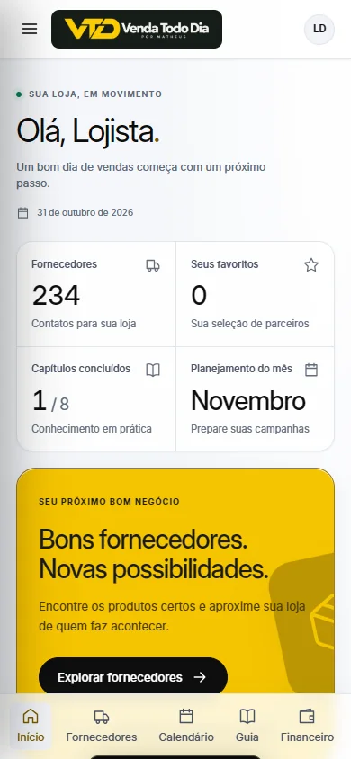
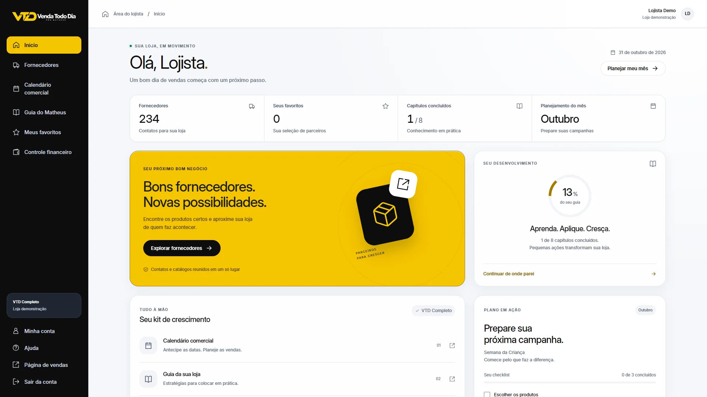
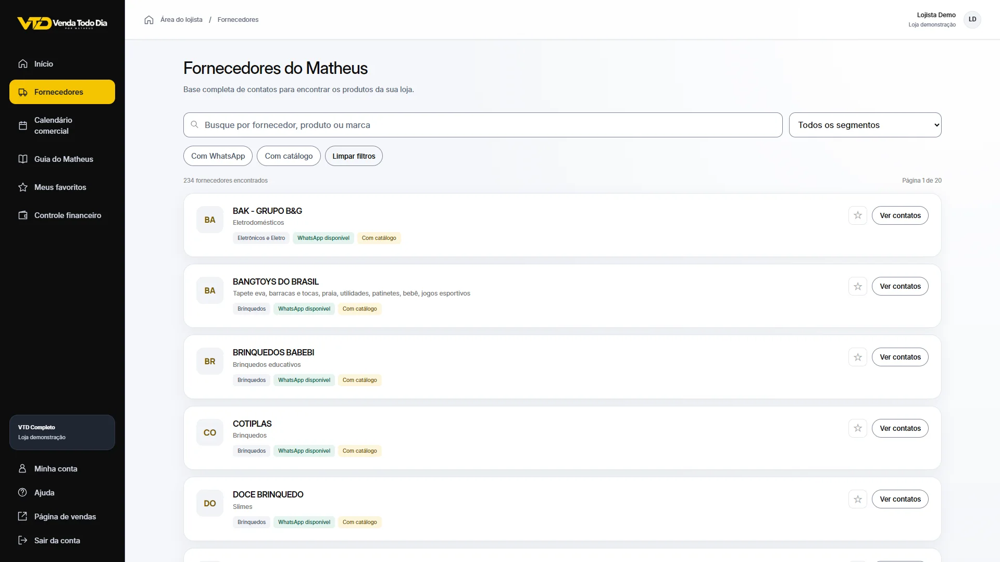
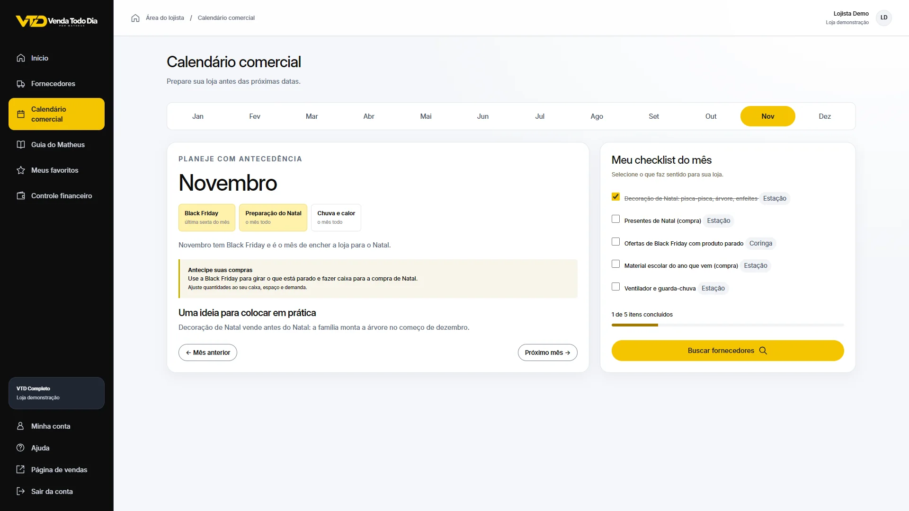
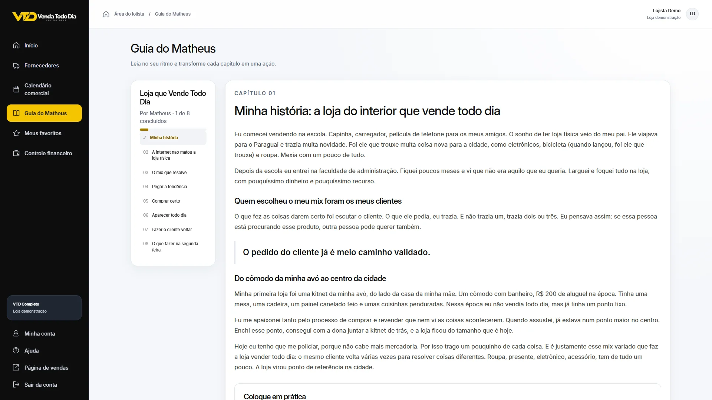
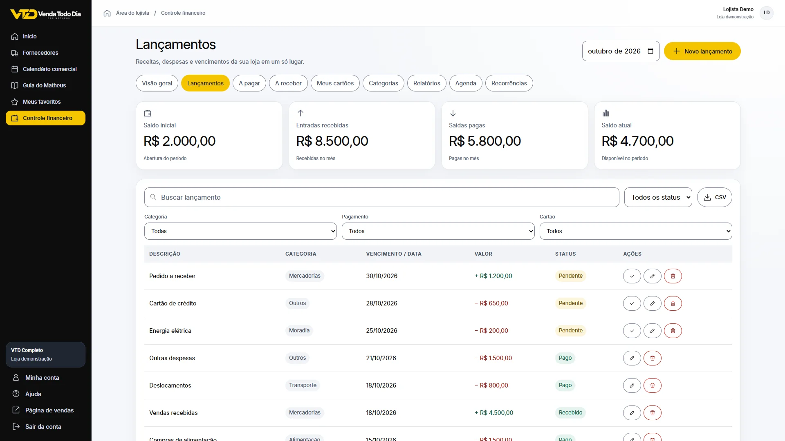

Prepare sua loja para vender todo dia.
Encontre fornecedores, planeje as próximas campanhas e acompanhe o caixa da sua loja em um só lugar.
Quero acessar o VTDConheça a proposta
Como o VTD ajuda lojistas a preparar a próxima venda
Pesquisar fornecedores, organizar campanhas e acompanhar o caixa toma tempo. O Matheus reuniu essas ferramentas a partir da própria rotina de lojista.
- 234 fornecedores
- Calendário comercial
- Guia do Matheus
- Controle financeiro
- Favoritos e checklists

Como funciona
Da pesquisa de fornecedores ao controle do caixa
Use cada ferramenta no momento em que precisar e acompanhe as tarefas da loja no mesmo acesso.
- Busque fornecedores por produto, marca ou segmento.
- Planeje campanhas com o calendário comercial.
- Coloque em prática as orientações do guia do Matheus.
- Registre manualmente entradas, saídas e vencimentos.
Do início à rotina
Quatro passos para organizar sua loja
Ative seu acesso
Siga as instruções recebidas após a confirmação da compra.
Pesquise
Encontre fornecedores e salve os contatos que quiser consultar depois.
Planeje
Escolha as próximas datas comerciais e organize suas tarefas.
Acompanhe
Registre as movimentações da loja e consulte as pendências.
Veja por dentro
Uma plataforma feita para a rotina da sua loja
Telas reais do VTD com dados de demonstração.

Visão geral
Fornecedores
Calendário comercial
Guia do Matheus
Controle financeiro
Acesso completo
Seis meses de Venda Todo Dia
Todas as ferramentas para pesquisar, planejar e organizar a sua loja.
Tudo que você precisa para começar
- Diretório com 234 fornecedores
- Calendário comercial de 12 meses
- Guia do Matheus com 8 capítulos
- Favoritos, tarefas e checklists
- Controle financeiro e relatórios
6 meses de acesso
Acesso completo
Venda Todo Dia
Organize suas compras, campanhas e finanças em um só lugar.
R$ 197 / 6 meses
Pagamento único
Quero meus 6 meses de acessoCheckout oficial da Greenn
Dúvidas frequentes
O que saber antes de começar
Para quem é o VTD?
Para pequenos lojistas que querem organizar a busca por fornecedores, o planejamento comercial e o financeiro da loja.
Como recebo meu acesso?
Siga as instruções enviadas pelos canais da compra após a confirmação do pagamento.
Posso usar no celular?
Sim. Abra o VTD no navegador do celular, tablet ou computador.
Como funcionam os lançamentos financeiros?
Você registra manualmente as movimentações, as categorias e as datas de vencimento.
Como compro dos fornecedores?
Negocie diretamente com cada empresa. Confirme o pedido mínimo, as condições e o frete antes de comprar.